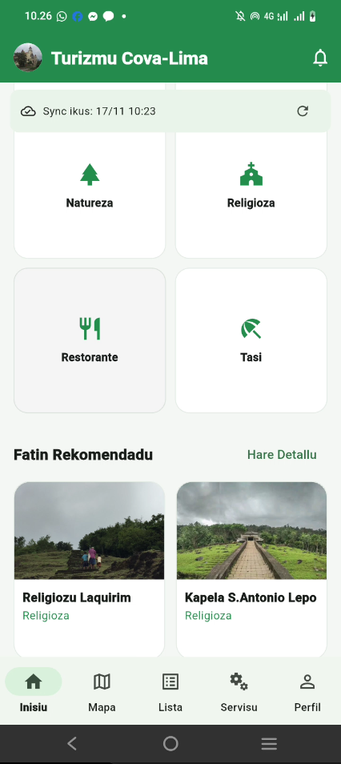
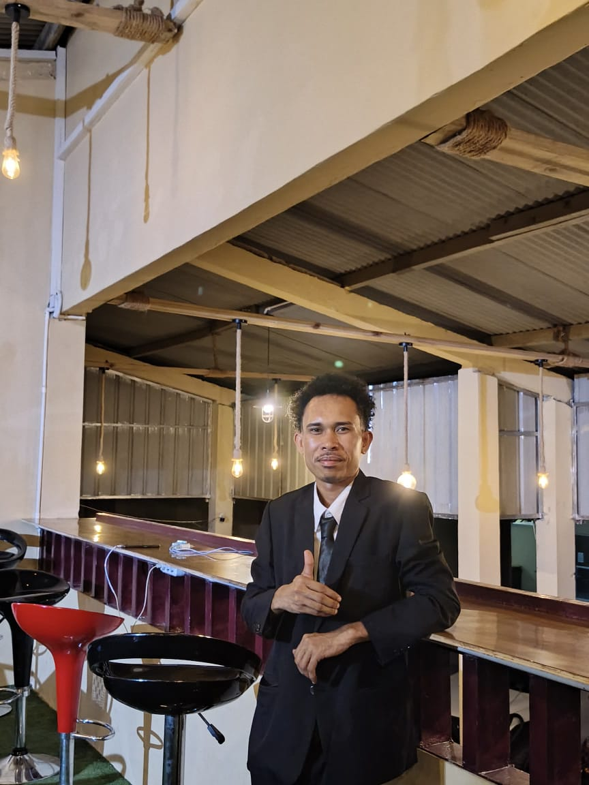
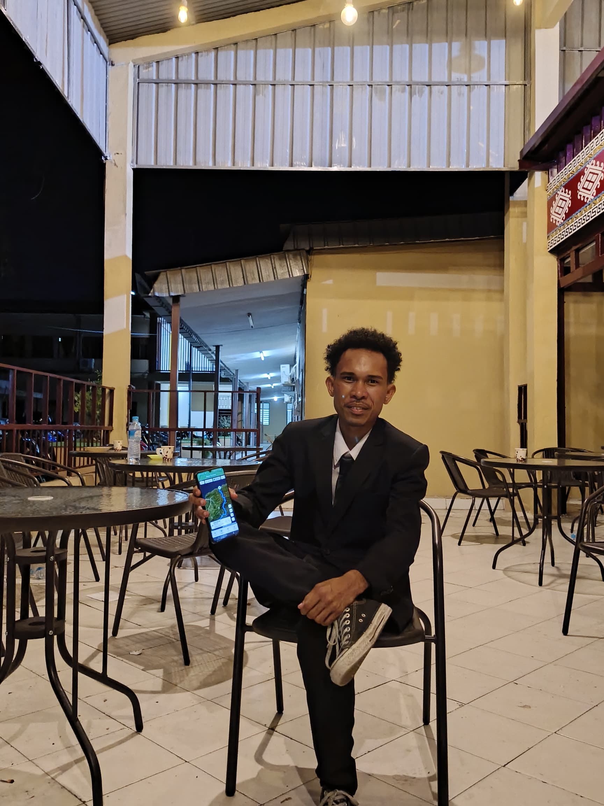

Fatin Turizmu
Destinasaun turizmu ho fotografia, deskrisaun, kategoria no lokalizasaun.
Esplora Timor-Leste ho teknolojia
Esplora destinasaun turizmu, kultura, natureza, akomodasaun no merkadu iha Munisípiu Cova-Lima liuhusi aplikasaun Android bazeia ba lokalizasaun.
Turista Cova-Lima mak aplikasaun Android bazeia ba lokalizasaun ne'ebé ajuda turista sira hetan informasaun kona-ba fatin turizmu, akomodasaun, merkadu, promosaun no rota iha mapa.

01 / Konaba aplikasaun
Turista Cova-Lima reúne informasaun turizmu iha aplikasaun Android ida. Ho GPS no OpenStreetMap, utilizadór bele haree lokalizasaun no rota ba fatin sira iha munisípiu.
Website ida ne'e aprezenta projetu akadémiku 2026 husi Institute of Business (IOB). Aplikasaun fó informasaun kona-ba destinasaun, akomodasaun, merkadu, promosaun no lian haat.
Haree funsionalidade02 / Funsionalidade
Informasaun ne'ebé presiza ba viajen ida iha Cova-Lima, organizadu iha fatin ida.
Destinasaun turizmu ho fotografia, deskrisaun, kategoria no lokalizasaun.
Haree fatin no rota iha mapa ho GPS no OpenStreetMap.
Informasaun kona-ba otél no fatin alojamentu iha Cova-Lima.
Deskobre merkadu no produtu lokál iha munisípiu.
Informasaun kona-ba promosaun no atividade turizmu.
Suporta Tetum, Portugés, Indonézia no Inglés.
03 / Aplikasaun Android
Esplora oitu ekraun reál husi aplikasaun Android Turista Cova-Lima.
04 / Sistema administrasaun
Sistema Web Admin bazeia ba Laravel ajuda administradór autorizadu jere informasaun turizmu.
Área administrasaun suporta jestaun dadus ba:

05 / Dezenvolvedór
Jaime Barreto
Dezenvolvedór Turista Cova-Lima iha Institute of Business (IOB), Timor-Leste. Projetu akadémiku ida ne'e aprezenta aplikasaun Android ba turizmu Cova-Lima iha 2026.

06 / Download aplikasaun
Instala Turista Cova-Lima iha Android no komesa deskobre informasaun turizmu Cova-Lima.
APK ba instalasaun manual iha Android.
07 / Kontaktu & projetu
Informasaun públika kona-ba aplikasaun no dezenvolvedór.
Kanal kontaktu
Hili plataforma ne'ebé fasil liu atu kontakta dezenvolvedór.